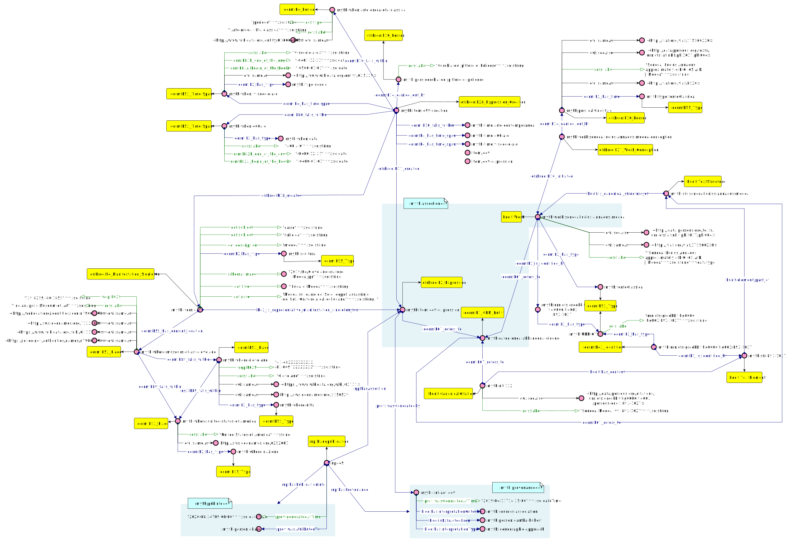

Mythologiae source data has been originally extracted from Mythologiae Collection. Such digital collection has been designed and implemented by FRAMELab (University of Bologna) as a collaborative project between researchers and students. The digital collection today stores (but still it is an ongoing project) 4260 cultural objects with different characteristics (e.g types, periods, authors, collocations). Each item of the collection has been referenced to depict a mythological scene by an expert and, when possible, to the literary reference which the expert states to share at some point the same scene.
This section presents briefly the process of conversion of data from database format to LOD and then presents an example of how a typical assertion has been represented with a customisation of MIMA datamodel (please refer to this article).
| # | Version | Release Date | Seralisation | Download |
|---|---|---|---|---|
| 1 | Version 1 | 31/03/2021 | TriG | |
| 2 | Version 1 | 31/03/2021 | Json LD | |
| 3 | Version 1 | 31/03/2021 | NQ |
Mythologiae data from FRAMELab has stored into a database, which is the source of the browsable collection. We took the database data as the input of the conversion process
in LOD format.
DB data has been automatically (and manually when needed) cleaned from typos and inaccurances, disambiguised, reconciled against external LOD sources (e.g. Wikidata, VIAF
Here you can look at the output dataset. Please click here to look at the complete dataset in your browser.
The case study in natural language:
Powered by Grafoo
Powered by Brick-Studio